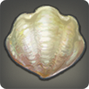

|
|
|
Nepto Dragon |
| 80 Deep Sea | |
| Believed by Eorzean fisherfolk to be the spawn of Thalaos─legendary creator of seas. It is, however, more likely to be no more than an overgrown little Thalaos. |
Erratic flows of aether released after the Calamity not only resulted in a warping of the landscape, but of the creatures that dwell upon it as well. Such is the case of the Nepto Dragon─a little Thalaos grown to epic proportions. |
|
Coelacanthus |
| 80 Coastlines | |
| A king among coelacanths. |
A slightly larger, slightly older, slightly more elusive cousin to the coelacanth, the deep-sea coelacanthus will only rise to the ocean's surface to feed on nights when the moon is hidden behind a veil of clouds. |
|
Endoceras |
| 80 Deep Sea | |
| An ancient sea-dweller with a body like a lance and a temper like the Fury's. Only few have ever seen this living legend, let alone landed one. |
So rare is this spear-shaped wavekin that ten summers may pass before one is caught in a lucky puller's net or found suctioned to the hull of a warship. |
|
Seahag |
| 80 Deep Sea | |
| A queen among dinichthys. |
When Sahagin hatch, they are all inspected by the elders for signs of weakness. If the spawn is not deemed in proper health, it is cast into the deep as an offering to the seahag─a massive fish the beast tribe believes to harbor the spirit of a legendary hero. |
|
Ignus Horn |
| 80 Lakes | |
| A king among ignus snails. |
A staple of the Amalj'aa diet, ignus snails rarely grow larger than a few ilms in length before being collected and thrown into a steaming pot of Trader vetch and scrubgrass. When allowed to thrive, however, they can achieve unthinkable sizes. |
|
Void Bass |
| 80 Lakes | |
| A king among Ilsabardian bass. |
On rare occasions a dark mist will settle over areas of Eorzea hit hardest by the corrupting hands of the Calamity. This mist is commonly referred to by skywatchers as “gloom” and is believed to be umbrally charged aether drawn forth from the void itself. That the void bass is drawn to the gloom may be evidence of the wavekin's true origins. |
|
Cornelia |
| 80 Rivers | |
| A champion among boxing plecos. |
As pugilists the realm wide exchange tales of the mighty Cornelia─brawler of legend─so, too, do fishers speak of Cornelia─a boxing pleco who will only leave her place among the rocks when all other pleco have been sent down for the count. |
|
Ninja Betta |
| 80 Lakes | |
| A king among assassin betta. |
Taking its name from the professional assassins of the Far East, the ninja betta will protect its territory by swallowing whole anything that comes within several yalms of the wavekin...including other assassin betta. |
|
Canavan |
| 80 Rivers XL (7) | |
A king among morinabaligi.
[Suitable for display in aquariums tier 4 and higher.] |
Most wavekin, with the exception of tortoises (which some scholars refuse to classify as wavekin), have a life expectancy of little more than a few summers. Canavan, however, is said to have seen more than five score. How this morinabaligi has survived so long may have to do with its extremely selective diet. |
|
Kuno the Killer |
| 80 Lakes | |
| A legendary white catfish rarely seen by even the eldest of fisherfolk. |
At constant war with Canavan for supremacy of nearby hunting waters, Kuno the Killer is as much a “killer” as any creature of the forest who survives by feeding on lesser prey. However, Kuno the Eater did not quite carry the same weight as Kuno the Killer. |
|
Pirate's Bane |
| 80 Deep Sea | |
| A king among titanic saws. |
The legend of the Pirate's Bane is filled with colorful tales of reaver hulls swollen with plunder being torn open and emptied into the bottomless deep. |
|
Ndendecki |
| 80 Lakes | |
| A king among soft-shelled snapping turtles. |
Since wandering into a natural cavern that also happened to be the lair of several escaped hecatoncheires, this gargantuan snapping turtle has terrorized his neighbors by severing the members of those stubborn enough to use his wading pool as a privy. |
|
Bat-o'-Nine-Tails |
| 80 Rivers | |
| A king among vampire lamperns. |
This bloodsucking eel has perfected a whip-like motion it performs with its tail to stun its prey, allowing the wavekin ample time to latch itself onto the soft underbellies of its prey. |
|
Wootz Knifefish Zenith |
| 80 Lakes | |
| A king among wootz knifefish. |
After the first several sightings of particularly opalescent wootz knifefish swimming in a ceruleum-tainted pool, rumors that an adventurer had dropped her bottle of Thavnairian mist into the water began to spread. Scholars, however, have been quick to refute these claims, stating that if this were possible, local markets would be filled with jerked beef zenith. |
|
Helicoprion |
| 80 Sands | |
| A legendary denizen of the sands, the helicoprion's maw is lined with long curved teeth that help it latch onto its airborne prey. |
Unlike those of most creatures in Eorzea, the teeth of the helicoprion never cease growing, nor do they ever fall out. The result of this painful phenomenon is a maw filled with a swirling set of curved blades that resembles the inner workings of some strange machina from a forgotten age. |
|
Darkstar |
| 80 Rivers | |
| A king among angry pike. |
A life of dwelling in the pitch-black depths of the abyss have rendered this pike's eyes unusually sensitive to light, to the point where even a single lamp marimo will drive the wavekin into the darkest recesses of the sea. |
|
Blue Corpse |
| 80 Rivers | |
| A king among wandering sculpin. |
To survive the extreme cold of Coerthas, this strange breed of wavekin will shut down all but the most vital of bodily functions and remain on the lakebed, unmoving, conserving its energy until the sun warms the waters enough to allow for hunting. |
|
Mahar |
| 80 Skies | |
| A king among rhamphorhynchus. |
Despite the fact rhamphorhynchus make no audible cries, they are known to form highly complex flocks when hunting. Realm nephologists attest this to an advanced form of communication through thought projection initiated by an alpha male─Mahar being one─and imitated through the flock by the lesser members. |
|
Shonisaurus |
| 80 Skies | |
| Within this legendary scalekin's body can be found a massive secondary bladder containing lighter-than-air gas. |
At a recent symposium held for nephologists, biologists, and other scholars of the Sea of Clouds, naturalist Marcette Manne presented a thesis claiming that the Raimdelle's classification of the shonisaurus as a cloudkin is mistaken, and that the creature is, in fact, a scalekin. Needless to say, she was laughed off the stage by her peers. |
|
Magicked Mushroom |
| 80 Lakes | |
| A king among mushroom crabs. |
With over a thousand different varieties of funguar documented in Eorzea alone, the probability that sooner or later an unknowing mushroom crab will collect the spores of a particularly nasty species is higher than one might think. And, that which does not kill the crab can only make him more magical. |
|
Giant Takitaro |
| 80 Lakes XL (7) | |
A king among takitaro.
[Suitable for display in aquariums tier 4 and higher.] |
Tales of a massive takitaro living in the waters of the Black Shroud once had fishers flocking to the forest in search of the wavekin...until it was learned that the tale was started by a drunken boar hunter who hit his head after falling into Urth's Fount with his faithful bloodhound (who had also been drinking from the hunter's wineskin). |
|
Namitaro |
| 80 Lakes | |
| This legendary freshwater fish cares not for those kings or queens who encroach upon his territory, and will turn to regicide to keep his waters his own. |
Determined to retain his claim to the underwater throne of Urth's Fount, the namitaro is in a constant battle with similarly legendary fish that reside in the holy lake. So large is the namitaro's dorsal fin that it can create fulm-high waves simply by turning. |
|
Blood Red Bonytongue |
| 80 Lakes L (4) | |
A king among bonytongue.
[Suitable for display in aquariums tier 3 and higher.] |
Knowing that its bright-red skin might alert potential prey to its presence, the too-clever-by-half blood red bonytongue will only hunt during foggy conditions. |
 |
Gigant Clam |
| 80 Deep Sea | |
| An especially large giant clam. Local fisher estimates put the age of this wavekin at over five score years. |
After overhearing a drunk fisher claim to his equally drunk shipmate that one of the massive mollusks gnawed the leg (or was it head?) off his infant son, a newly instated Yellowjacket sergeant looking to impress his superiors took it upon himself to order his men to locate and destroy as many of the wavekin as possible, leaving the population decimated. |
|
Icepick |
| 120 Lakes | |
| A freshwater fish adapted to survive in the cold waters of Coerthas. It earns its name from its long, beak-like mouth. |
While the severe climate change following the Calamity resulted in the disappearance of most smelt from Coerthas, some of the species adapted, and now thrive in the frigid waters. The icepick is one such example, its long beak-like mouth allowing it to break through underwater ice in order to feed. |
|